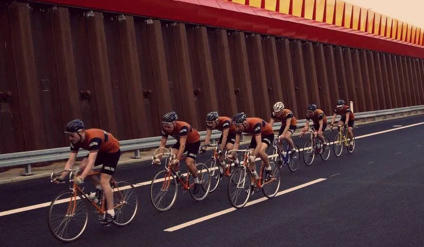

Squadra Molteni efter Cancellara
Squadra Molteni har fået et wildcard til holdtidskørselen Chasing Cancellara, der køres på en 54,6 km rute i og omkring Silkeborg på søndag.
Chasing Cancellara er en udfordring, hvor Fabian Cancellara og 3 venner kører først ud på en 54,6 km rute. Herefter bliver team efter team sendt efter Cancellara og Co.
– Vi er blevet kontaktet af folkene bag Chasing Cancellara. Og det lød på dem, som om de savnede et hold, der rent faktisk ville kunne indhente Fabian Cancellara’s team. Og det kan Det Orange Eksprestog, lyder det fra Molteni HQ.
Ruten der skal køres på, er en krævende rute med start om mål midt i silkeborg. Den byder på varieret terræn og 526 højdemeter. Når ruten er 54,6 km er det fordi, at det er netop den distance, som gav guld til schweizeren ved de olympiske lege i Rio i 2016.
Kort efter Rio 2016 kørte Det Orange Eksprestog holdtidskørsel i Silkeborg. Det var i forbindelse med åbningen af Silkeborg-Århus motorvejen. Her hamrede eksprestoget afsted 50 km/t og efterlod mere end 30 carbon-lycra-hold grædende i rabatten.


– Vi har samlet et stærkt hold, der i den grad kan sætte både Cancellaras og andre carbon-hold under alvorlig pres. Der er ingen tvivl om, at flere hold vil opleve en orange sky af uld og stål drøne forbi dem i høj fart, lyder der fra Molteni HQ.
Det Orange Eksprestog har dieselmotorene Kasper Sørensen, Svend Seegert og Niels Bjørnsteen i motorrummet – og Peter Meinert som kaptajn. Og det er som sædvanlig Per Sandhal, der har lagt taktikken, og Grane Maaløe står for den aerodynamiske optimering.
– Jeg har sagt, at de skal køre som de plejer, fortæller Per Sandhal. Ja, og jeg vil lige sætte rytternes frempind 2-3 cm ned – og sadlen 1 cm op. Det giver løseligt regnet små 2 km/t ekstra, tilføjer Grane Maaløe
Chasing Cancellara køres søndag 26. august, med start og mål på torvet i Silkeborg – og kan ses på Eurosport 2 fra kl. 10.00